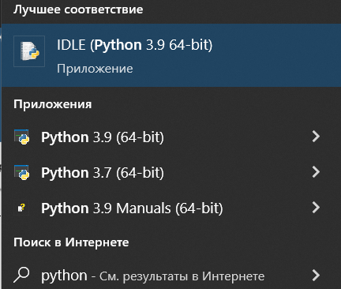
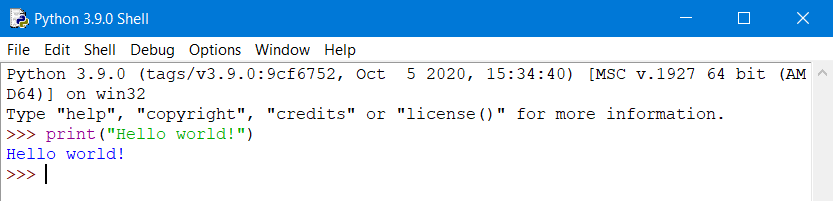
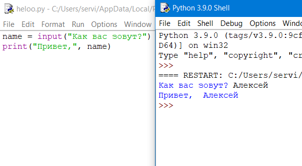

Сегодня мы напишем первую программу на Python в среде разработки IDLE.
При вводе “Python” в поиск компьютера будет выледяться программа IDLE - специальная среда разработки для Python.
Открываем это приложение, после чего можно уже писать свою первую программу. По традиции, первой программой у нас будет вывод “Hello world!”.
Чтобы написать вывод строки на экран, воспользуемся функцией print()
Вводим код и нажимаем Enter. Результат можно увидеть ниже.
Поздравляю, вы создали свою первую програму на Python!
Но долго на интерактивном режиме оставаться мы не будем. В основном, мы будем сохранять программный код в файл и запускать уже его.
Для открытия файла нажмите File - New File или сочетанием клавиш Ctrl + N
В открывшемся окне введите следующий код:
name =
Первая строка печатает вопрос ("Как Вас зовут? "), ожидает, пока вы не напечатаете что-нибудь и не нажмёте Enter и сохраняет введённое значение в переменной name.
Во второй строке мы используем функцию print для вывода текста на экран, в данном случае для вывода "Привет, " и того, что хранится в переменной "name".
Теперь нажмём F5 (или выберем в меню IDLE Run - Run Module) и убедимся, что то, что мы написали, работает. Перед запуском IDLE предложит нам сохранить файл. Сохраним туда, куда вам будет удобно, после чего программа запустится.
Вы должны увидеть что-то наподобие этого (на скриншоте слева - файл с написанной вами программой, справа - результат её работы):
Поздравляю! Вы научились писать простейшие программы, а также познакомились со средой разработки IDLE. Скоро вы сможете изучить синтаксис Python, научиться писать циклы и условия. Желаем вам удачи!